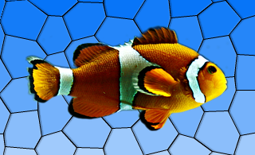
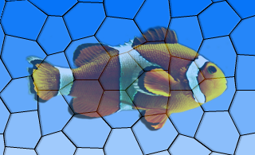

QGraphicsEffect Class
The QGraphicsEffect class is the base class for all graphics effects. More...
| Header: | #include <QGraphicsEffect> |
| CMake: | find_package(Qt6 REQUIRED COMPONENTS Widgets) target_link_libraries(mytarget PRIVATE Qt6::Widgets) |
| qmake: | QT += widgets |
| Inherits: | QObject |
| Inherited By: | QGraphicsBlurEffect, QGraphicsColorizeEffect, QGraphicsDropShadowEffect, and QGraphicsOpacityEffect |
Public Types
| enum | ChangeFlag { SourceAttached, SourceDetached, SourceBoundingRectChanged, SourceInvalidated } |
| flags | ChangeFlags |
| enum | PixmapPadMode { NoPad, PadToTransparentBorder, PadToEffectiveBoundingRect } |
Properties
- enabled : bool
Public Functions
| QGraphicsEffect(QObject *parent = nullptr) | |
| virtual | ~QGraphicsEffect() |
| QRectF | boundingRect() const |
| virtual QRectF | boundingRectFor(const QRectF &rect) const |
| bool | isEnabled() const |
Public Slots
| void | setEnabled(bool enable) |
| void | update() |
Signals
| void | enabledChanged(bool enabled) |
Protected Functions
| virtual void | draw(QPainter *painter) = 0 |
| void | drawSource(QPainter *painter) |
| QRectF | sourceBoundingRect(Qt::CoordinateSystem system = Qt::LogicalCoordinates) const |
| virtual void | sourceChanged(QGraphicsEffect::ChangeFlags flags) |
| bool | sourceIsPixmap() const |
| QPixmap | sourcePixmap(Qt::CoordinateSystem system = Qt::LogicalCoordinates, QPoint *offset = nullptr, QGraphicsEffect::PixmapPadMode mode = PadToEffectiveBoundingRect) const |
| void | updateBoundingRect() |
Detailed Description
Effects alter the appearance of elements by hooking into the rendering pipeline and operating between the source (e.g., a QGraphicsPixmapItem) and the destination device (e.g., QGraphicsView's viewport). Effects can be disabled by calling setEnabled(false). If effects are disabled, the source is rendered directly.
To add a visual effect to a QGraphicsItem, for example, you can use one of the standard effects, or alternately, create your own effect by creating a subclass of QGraphicsEffect. The effect can then be installed on the item using QGraphicsItem::setGraphicsEffect().
Qt provides the following standard effects:
- QGraphicsBlurEffect - blurs the item by a given radius
- QGraphicsDropShadowEffect - renders a dropshadow behind the item
- QGraphicsColorizeEffect - renders the item in shades of any given color
- QGraphicsOpacityEffect - renders the item with an opacity
 | |
|
|
 |
|


For more information on how to use each effect, refer to the specific effect's documentation.
To create your own custom effect, create a subclass of QGraphicsEffect (or any other existing effects) and reimplement the virtual function draw(). This function is called whenever the effect needs to redraw. The draw() function takes the painter with which to draw as an argument. For more information, refer to the documentation for draw(). In the draw() function you can call sourcePixmap() to get a pixmap of the graphics effect source which you can then process.
If your effect changes, use update() to request for a redraw. If your custom effect changes the bounding rectangle of the source, e.g., a radial glow effect may need to apply an extra margin, you can reimplement the virtual boundingRectFor() function, and call updateBoundingRect() to notify the framework whenever this rectangle changes. The virtual sourceChanged() function is called to notify the effects that the source has changed in some way - e.g., if the source is a QGraphicsRectItem and its rectangle parameters have changed.
See also QGraphicsItem::setGraphicsEffect() and QWidget::setGraphicsEffect().
Member Type Documentation
enum QGraphicsEffect::ChangeFlag
flags QGraphicsEffect::ChangeFlags
This enum describes what has changed in QGraphicsEffectSource.
| Constant | Value | Description |
|---|---|---|
QGraphicsEffect::SourceAttached | 0x1 | The effect is installed on a source. |
QGraphicsEffect::SourceDetached | 0x2 | The effect is uninstalled on a source. |
QGraphicsEffect::SourceBoundingRectChanged | 0x4 | The bounding rect of the source has changed. |
QGraphicsEffect::SourceInvalidated | 0x8 | The visual appearance of the source has changed. |
The ChangeFlags type is a typedef for QFlags<ChangeFlag>. It stores an OR combination of ChangeFlag values.
enum QGraphicsEffect::PixmapPadMode
This enum describes how the pixmap returned from sourcePixmap should be padded.
| Constant | Value | Description |
|---|---|---|
QGraphicsEffect::NoPad | 0 | The pixmap should not receive any additional padding. |
QGraphicsEffect::PadToTransparentBorder | 1 | The pixmap should be padded to ensure it has a completely transparent border. |
QGraphicsEffect::PadToEffectiveBoundingRect | 2 | The pixmap should be padded to match the effective bounding rectangle of the effect. |
Property Documentation
enabled : bool
This property holds whether the effect is enabled or not.
If an effect is disabled, the source will be rendered with as normal, with no interference from the effect. If the effect is enabled, the source will be rendered with the effect applied.
This property is enabled by default.
Using this property, you can disable certain effects on slow platforms, in order to ensure that the user interface is responsive.
Access functions:
| bool | isEnabled() const |
| void | setEnabled(bool enable) |
Notifier signal:
| void | enabledChanged(bool enabled) |
Member Function Documentation
QGraphicsEffect::QGraphicsEffect(QObject *parent = nullptr)
Constructs a new QGraphicsEffect instance having the specified parent.
[virtual noexcept] QGraphicsEffect::~QGraphicsEffect()
Removes the effect from the source, and destroys the graphics effect.
QRectF QGraphicsEffect::boundingRect() const
Returns the effective bounding rectangle for this effect, i.e., the bounding rectangle of the source in device coordinates, adjusted by any margins applied by the effect itself.
See also boundingRectFor() and updateBoundingRect().
[virtual] QRectF QGraphicsEffect::boundingRectFor(const QRectF &rect) const
Returns the effective bounding rectangle for this effect, given the provided rect in the device coordinates. When writing you own custom effect, you must call updateBoundingRect() whenever any parameters are changed that may cause this this function to return a different value.
See also sourceBoundingRect().
[pure virtual protected] void QGraphicsEffect::draw(QPainter *painter)
This pure virtual function draws the effect and is called whenever the source needs to be drawn.
Reimplement this function in a QGraphicsEffect subclass to provide the effect's drawing implementation, using painter.
For example:
MyGraphicsEffect::draw(QPainter *painter) { ... QPoint offset; if (sourceIsPixmap()) { // No point in drawing in device coordinates (pixmap will be scaled anyways). const QPixmap pixmap = sourcePixmap(Qt::LogicalCoordinates, &offset); ... painter->drawPixmap(offset, pixmap); } else { // Draw pixmap in device coordinates to avoid pixmap scaling; const QPixmap pixmap = sourcePixmap(Qt::DeviceCoordinates, &offset); painter->setWorldTransform(QTransform()); ... painter->drawPixmap(offset, pixmap); } ... }
This function should not be called explicitly by the user, since it is meant for reimplementation purposes only.
[protected] void QGraphicsEffect::drawSource(QPainter *painter)
Draws the source directly using the given painter.
This function should only be called from QGraphicsEffect::draw().
For example:
MyGraphicsOpacityEffect::draw(QPainter *painter) { // Fully opaque; draw directly without going through a pixmap. if (qFuzzyCompare(m_opacity, 1)) { drawSource(painter); return; } ... }
See also QGraphicsEffect::draw().
[signal] void QGraphicsEffect::enabledChanged(bool enabled)
This signal is emitted whenever the effect is enabled or disabled. The enabled parameter holds the effects's new enabled state.
Note: Notifier signal for property enabled.
See also isEnabled().
[protected] QRectF QGraphicsEffect::sourceBoundingRect(Qt::CoordinateSystem system = Qt::LogicalCoordinates) const
Returns the bounding rectangle of the source mapped to the given system.
Calling this function with Qt::DeviceCoordinates outside of QGraphicsEffect::draw() will give undefined results, as there is no device context available.
See also draw().
[virtual protected] void QGraphicsEffect::sourceChanged(QGraphicsEffect::ChangeFlags flags)
This virtual function is called by QGraphicsEffect to notify the effect that the source has changed. If the effect applies any cache, then this cache must be purged in order to reflect the new appearance of the source.
The flags describes what has changed.
[protected] bool QGraphicsEffect::sourceIsPixmap() const
Returns true if the source effectively is a pixmap, e.g., a QGraphicsPixmapItem.
This function is useful for optimization purposes. For instance, there's no point in drawing the source in device coordinates to avoid pixmap scaling if this function returns true - the source pixmap will be scaled anyways.
[protected] QPixmap QGraphicsEffect::sourcePixmap(Qt::CoordinateSystem system = Qt::LogicalCoordinates, QPoint *offset = nullptr, QGraphicsEffect::PixmapPadMode mode = PadToEffectiveBoundingRect) const
Returns a pixmap with the source painted into it.
The system specifies which coordinate system to be used for the source. The optional offset parameter returns the offset where the pixmap should be painted at using the current painter. For control on how the pixmap is padded use the mode parameter.
The returned pixmap is clipped to the current painter's device rectangle when system is Qt::DeviceCoordinates.
Calling this function with Qt::DeviceCoordinates outside of QGraphicsEffect::draw() will give undefined results, as there is no device context available.
See also draw() and boundingRect().
[slot] void QGraphicsEffect::update()
Schedules a redraw of the effect. Call this function whenever the effect needs to be redrawn. This function does not trigger a redraw of the source.
See also updateBoundingRect().
[protected] void QGraphicsEffect::updateBoundingRect()
This function notifies the effect framework when the effect's bounding rectangle has changed. As a custom effect author, you must call this function whenever you change any parameters that will cause the virtual boundingRectFor() function to return a different value.
This function will call update() if this is necessary.
See also boundingRectFor(), boundingRect(), and sourceBoundingRect().